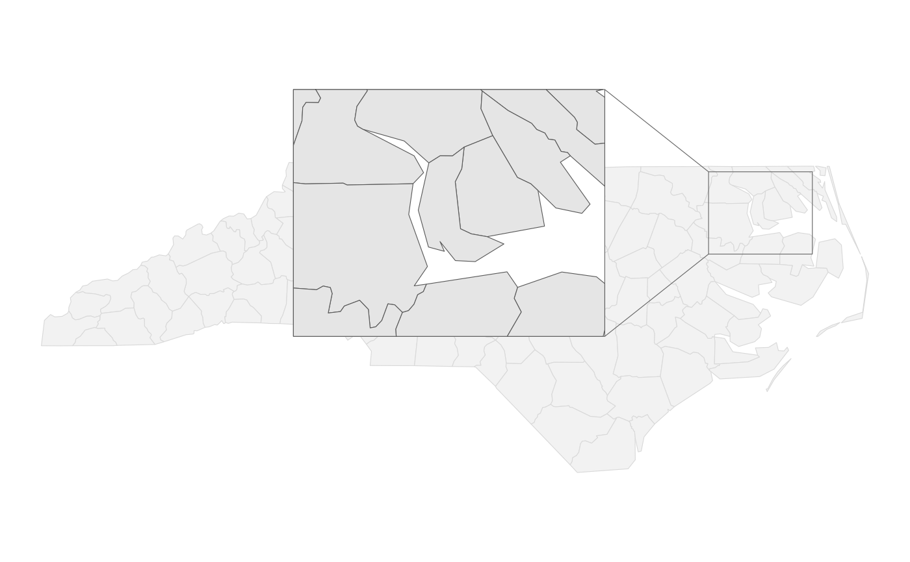
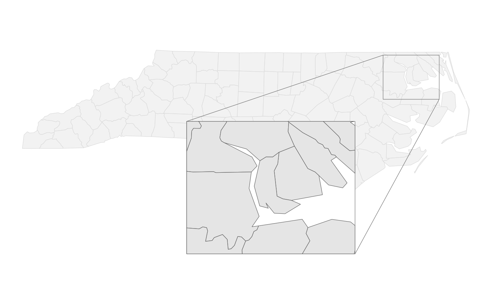
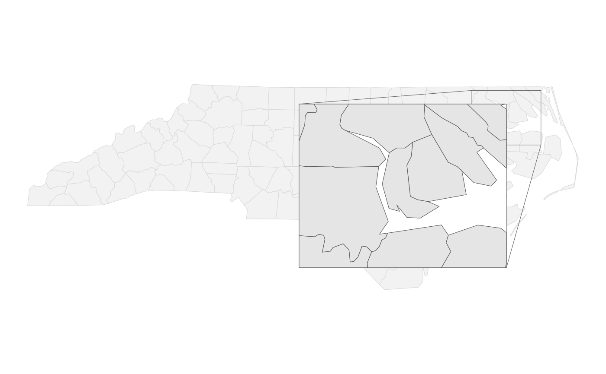
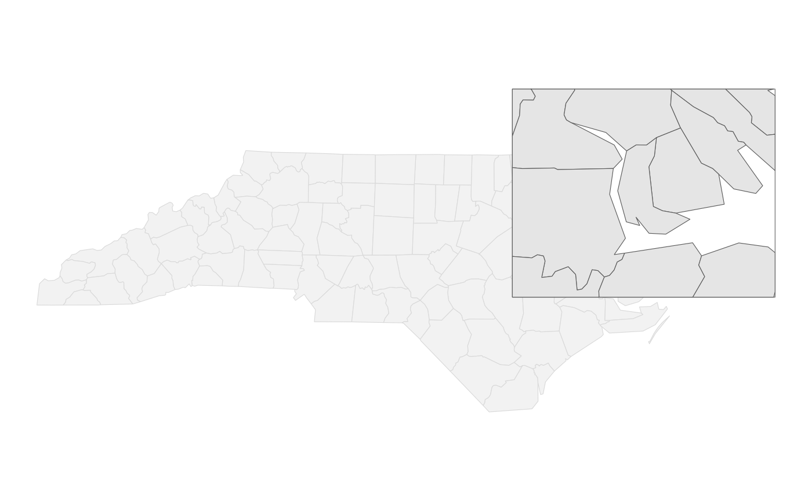

Rectangular insets
Arguments
- centre
Coordinates of the inset centre. Ideally this should be an
sfcobject (seesf::st_sfc()) including a coordinate reference system. Ansf::st_point()or a vector of longitude and latitude are also accepted. If a CRS cannot be determined, WGS 84 is assumed.- hwidth
Half width of the inset in the units of the inset's
crs_working.- hheight
Half height of the inset in the units of the inset's
crs_working. Defaults to the same value ashwidth.
See also
Other shapes:
shape_circle()
Examples
library(ggplot2)
nc <- sf::st_read(system.file("shape/nc.shp", package = "sf"), quiet = TRUE)
make_demo <- function(...) {
ggplot(nc) +
geom_sf(fill = "grey95", colour = "grey85") +
# For a filled frame, we want to interleave it between the base layer
# (above this line) and the target layer (below the following line).
geom_inset_frame(target.aes = list(fill = "white")) +
geom_sf_inset(map_base = "none") +
coord_sf_inset(inset = configure_inset(...)) +
theme_void()
}
centroid <-
sf::st_centroid(nc$geometry[[21]]) |>
sf::st_sfc(crs = sf::st_crs(nc))
rectangle <- shape_rectangle(centroid, hwidth = 50, hheight = 40)
make_demo(rectangle, scale = 3, translation = c(-300, 0))

make_demo(rectangle, scale = 3, translation = c(-250, -200))

make_demo(rectangle, scale = 3, translation = c(-150, -100))

make_demo(rectangle, scale = 3, translation = c(0, 0))

make_demo(rectangle, scale = 0.5, translation = c(0, 0))
